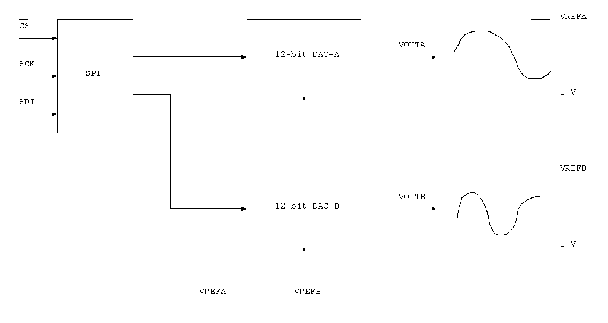
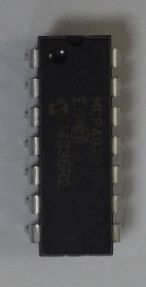
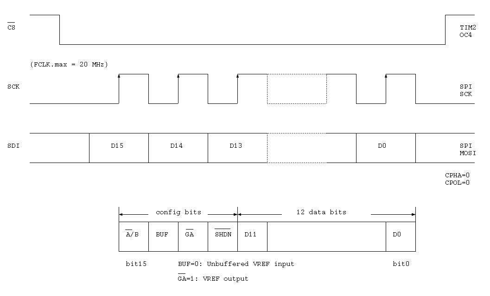

<!-- header -->

<h1>Microchip MCP4922</h1>

<p>The MCP4922 is a dual 12-bit Digital-to-Analog Converter. 
It has an SPI interface.</p>

<p></p>

<p>
</p>


<section>
	<h2>SPI interface</h2>

	<p></p>
</section>

<!-- footer -->

